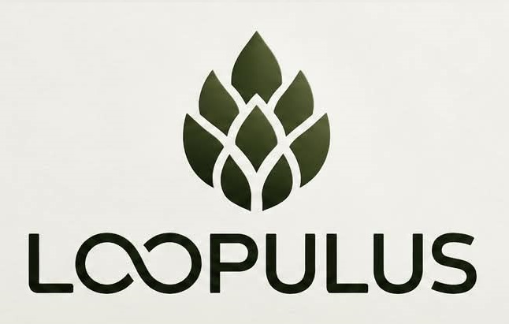

UM NOVO CICLO ESTÁ COMEÇANDO
Vestir
um ciclo.
Uma nova forma de pensar roupas: essencial, consciente e feita para durar.
100% algodão orgânico · produzido em Santa Catarina · design minimalista

Não queremos fazer mais uma camiseta.
Queremos fazer uma peça que tenha sentido antes mesmo de ser vestida.
ORGÂNICO
Algodão orgânico nacional, escolhido para unir conforto, qualidade e uma cadeia mais consciente.
LOCAL
Desenvolvido e produzido em Santa Catarina, aproximando quem cria de quem fabrica.
ESSENCIAL
Formas limpas, cores atemporais e uma identidade que não precisa gritar para ser percebida.
DETALHES DA COLEÇÃO
THE FIRST LOOP
Uma peça.
Um começo.
O primeiro capítulo da Loopulus nasce em duas cores estonadas e com uma linguagem visual monocromática, marcada diretamente no tecido.

A HISTÓRIA ESTÁ COMEÇANDO
Em breve.
Entre no ciclo.
@LOOPULUS ↗